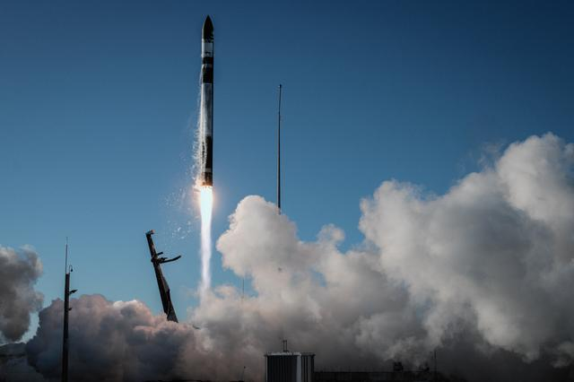
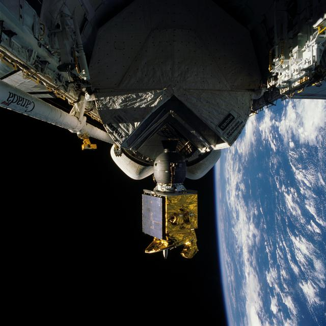
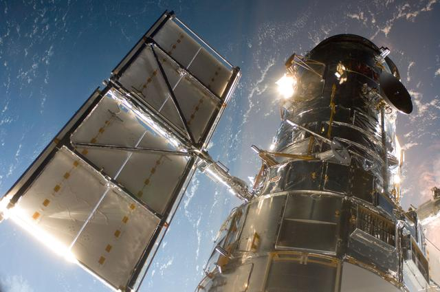
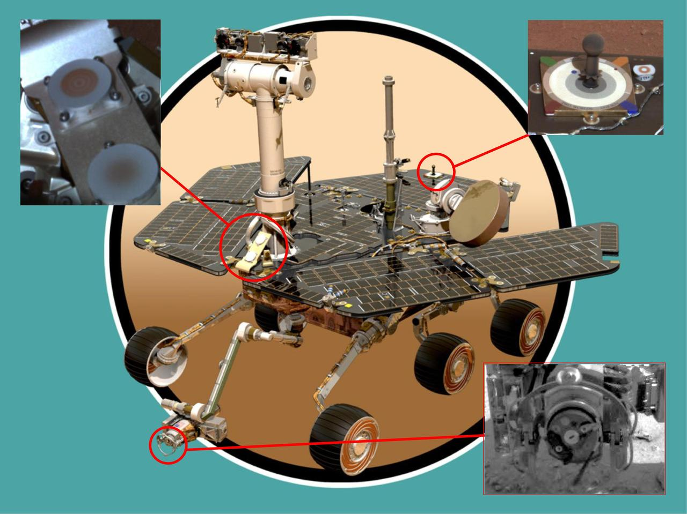
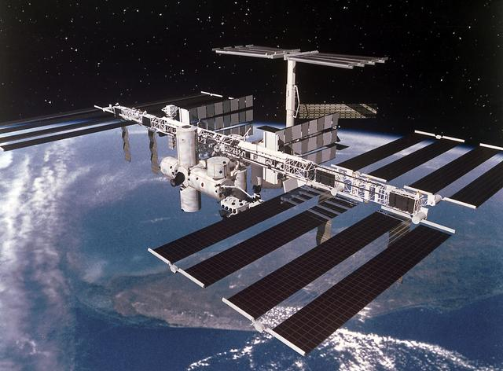
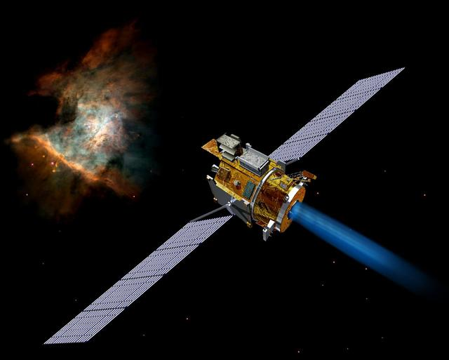

Space Technology
The tools and systems that make spaceflight, observation, and exploration possible. Below is an overview of the major technology areas in use today.
Rockets
Launch vehicles are the only way to reach space. They must overcome Earth’s gravity and atmosphere by burning propellant in stages; once a stage runs out, it is jettisoned to reduce mass. Modern designs increasingly use reusable first stages that land and fly again, cutting cost and enabling more frequent missions.
Rockets carry satellites, crew capsules, and cargo. NASA’s Space Launch System (SLS), SpaceX’s Falcon and Starship, and vehicles from other nations and companies all follow these principles. Reliability and payload capacity define how much science and how many people can be sent into orbit and beyond.

Satellites
Satellites are spacecraft that orbit Earth or other bodies. They provide Earth observation (weather, climate, agriculture, disaster response), global communications, and navigation (e.g. GPS). Scientific satellites study the atmosphere, magnetic field, and solar wind, while space telescopes use orbits above the atmosphere to observe the universe without distortion.
Sizes range from tiny CubeSats to large observatories like the Hubble Space Telescope. Many are built by national agencies; others by companies and universities. Together they support daily life on Earth and expand our understanding of the planet and the cosmos.

Telescopes
Space telescopes operate above Earth’s atmosphere, which blocks or blurs many wavelengths of light. In orbit, they can observe in visible, ultraviolet, infrared, and X-ray light with far greater clarity than ground-based instruments. The Hubble Space Telescope has been observing since 1990 and has helped measure the age of the universe and the rate of its expansion.
The James Webb Space Telescope, launched in 2021, sees mainly in infrared and can look back at the first galaxies and study the atmospheres of exoplanets. Other missions, such as Chandra and XMM-Newton, focus on high-energy radiation. Together, space telescopes have transformed our understanding of stars, galaxies, black holes, and the early universe.

Rovers
Planetary rovers are robotic vehicles that land on the surface of other worlds and move across the terrain. They carry cameras, drills, and instruments to analyse soil and rock. On Mars, rovers like Curiosity and Perseverance search for signs of past habitability and collect samples for possible return to Earth. They also test technologies needed for future human landings.
Rovers have explored the Moon and Mars; future missions may target asteroids or the moons of the outer planets. They operate for years, surviving dust storms and extreme temperatures, and send back images and data that shape our view of the solar system.

The International Space Station
The ISS is a permanently crewed laboratory in low Earth orbit, roughly 400 km above the surface. It is a partnership between NASA, Roscosmos, ESA, JAXA, and CSA. Crews typically stay for about six months, conducting research in biology, physics, astronomy, and human physiology. The station also tests life-support and other systems needed for long-duration missions to the Moon and Mars.
Astronauts maintain the station, run experiments, and support spacewalks for upgrades and repairs. The ISS has been continuously occupied since 2000 and remains the primary place where we study how humans and technology behave in space for extended periods.

Deep Space Exploration
Deep space missions go beyond Earth orbit to the Moon, Mars, asteroids, and the outer solar system. Uncrewed probes have visited every major planet and many moons and small bodies. They measure magnetic fields, atmospheres, surface composition, and geology, and search for conditions that could support or have supported life.
Programmes like Artemis aim to return humans to the Moon and eventually send them to Mars. Robotic missions continue to extend our reach: orbiters and landers at Mars, missions to Jupiter’s and Saturn’s moons, and probes such as Voyager that have left the solar system. These efforts address fundamental questions about the origin and evolution of the solar system and the possibility of life elsewhere.
